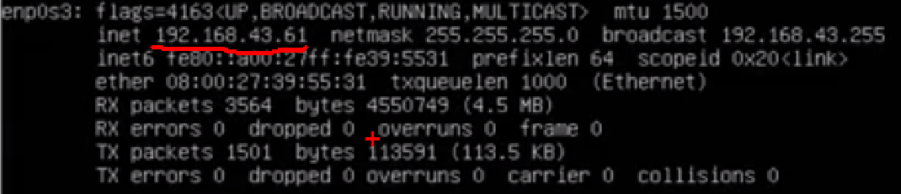
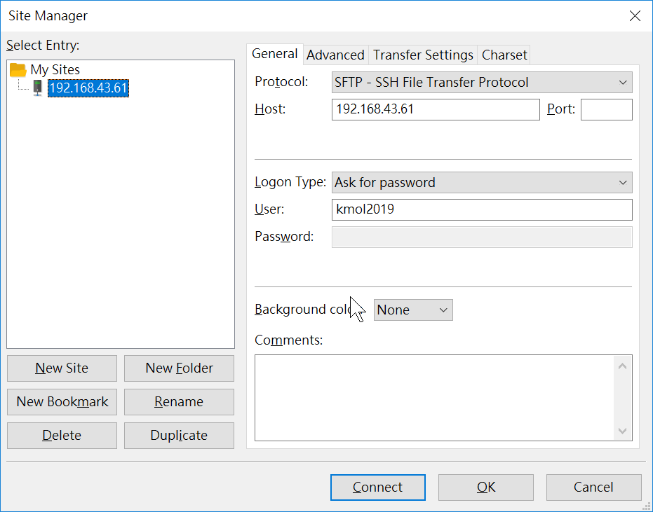
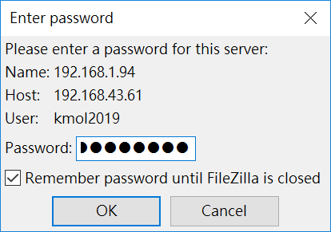

Ubuntu 安裝 <<
Previous Next >> 期末報告
配置 Ubuntu 伺服器
先安裝 nginx , stunnel , uwsgi
sudo apt install nginx
sudo apt install stunnel
sudo apt install uwsgi
再查詢 ip
ifconfig

192.168.43.61
P.S. 可以先到瀏覽器確認 nginx 是否成功安裝，再瀏覽器輸入
http://192.168.43.61 ( IP 位置) , 會跳出" Welcome to nginx! "
到 FileZillaPortable
File -> Site Manager

Host : ( 填入用 ifconfig 的 IP )
User : ( 填入安裝 Ubuntu 的使用者名稱)
之後按 Connect
連線後輸入使用者密碼

確認 允許使用 SSH 登入連線
到 老師的網站 去把設定檔設定內容建立起來
Ubuntu 18.04 /etc/netplan/50-cloud-init.yaml 檔案參考內容 :
# This file is generated from information provided by
# the datasource. Changes to it will not persist across an instance.
# To disable cloud-init's network configuration capabilities, write a file
# /etc/cloud/cloud.cfg.d/99-disable-network-config.cfg with the following:
# network: {config: disabled}
network:
ethernets:
enp0s3:
dhcp4: false
dhcp6: false
addresses:
#- 192.168.1.13/24
- 2001:288:6004::1/64
gateway4: 192.168.1.1
gateway6: 2001:288:6004::254
nameservers:
addresses:
- 140.130.1.2
- 168.95.1.1
- 2001:288:6004:1::2
- 2001:b000:168::1
version: 2
/etc/nginx/sites-available/default 參考檔案 :
server {
listen 80;
listen [::]:80;
root /home/kmol2019/newcms;
index index.html;
location /static {
alias /home/kmol2019/newcms/cmsimde/static/;
}
location /downloads {
alias /home/kmol2019/newcms/downloads/;
}
location /images {
alias /home/kmol2019/newcms/images/;
}
location / {
try_files $uri $uri/ =404;
}
location /blog {
alias /home/kmol2019/cmsimfly/blog/;
}
location /reveal {
alias /home/kmol2019/cmsimfly/reveal/;
}
}
server {
listen 443 ssl;
#listen [::]:443 ssl ipv6only=on;
location /static {
alias /home/kmol2019/cmsimfly/static/;
}
location / {
include uwsgi_params;
uwsgi_pass 127.0.0.1:8080;
}
#server_name ipv4_ip;
#ssl on;
ssl_certificate /etc/stunnel/localhost.crt;
ssl_certificate_key /etc/stunnel/localhost.key;
ssl_session_timeout 5m;
ssl_protocols SSLv3 TLSv1 TLSv1.1 TLSv1.2;
ssl_ciphers "HIGH:!aNULL:!MD5 or HIGH:!aNULL:!MD5:!3DES";
ssl_prefer_server_ciphers on;
try_files $uri $uri/ =404;
}
server {
#listen 89 default_server;
#listen [::]:89 default_server ipv6only=on;
listen 8943 ssl;
#listen [::]:8943 ssl ipv6only=on;
location /static {
alias /home/kmol2019/cmsimfly2/static/;
}
location / {
include uwsgi_params;
uwsgi_pass 127.0.0.1:8082;
}
#server_name ipv4_ip;
#ssl on;
ssl_certificate /etc/stunnel/localhost.crt;
ssl_certificate_key /etc/stunnel/localhost.key;
ssl_session_timeout 5m;
ssl_protocols SSLv3 TLSv1 TLSv1.1 TLSv1.2;
ssl_ciphers "HIGH:!aNULL:!MD5 or HIGH:!aNULL:!MD5:!3DES";
ssl_prefer_server_ciphers on;
try_files $uri $uri/ =404;
}
server {
#listen 88 default_server;
#listen [::]:88 default_server ipv6only=on;
listen 8843 ssl;
#listen [::]:8843 ssl ipv6only=on;
location /static {
alias /home/kmol2019/newcms/cmsimde/static/;
}
location / {
include uwsgi_params;
uwsgi_pass 127.0.0.1:8081;
}
#server_name ipv4_ip;
#ssl on;
ssl_certificate /etc/stunnel/localhost.crt;
ssl_certificate_key /etc/stunnel/localhost.key;
ssl_session_timeout 5m;
ssl_protocols SSLv3 TLSv1 TLSv1.1 TLSv1.2;
ssl_ciphers "HIGH:!aNULL:!MD5 or HIGH:!aNULL:!MD5:!3DES";
ssl_prefer_server_ciphers on;
try_files $uri $uri/ =404;
}
uwsgi.ini 參考檔案 :
[uwsgi]
socket = 127.0.0.1:8080
uid = kmol2019
gid = kmol2019
plugins-dir = /usr/lib/uwsgi/plugins/
plugin = python3
master = true
logto = /var/log/uwsgi/emperor.log
logfile-chown = kmol2019:kmol2019
processes = 4
threads = 2
chdir = /home/kmol2019/cmsimfly
wsgi-file = /home/kmol2019/cmsimfly/wsgi.py
建立完
利用 FileZillaPortable 丟到伺服器內
再到 Ubuntu 把檔案貼到適當路徑
sudo cp 50-cloud-init.yaml /etc/netplan
sudo cp default /etc/nginx/sites-available
sudo cp localhost.crt /etc/stunnel
sudo cp localhost.key /etc/stunnel
P.S. localhost.crt 和 localhost.key 的檔案暫時到其他倉儲複製，再用 FileZillaPortable 丟到伺服器
sudo netplan apply
sudo /etc/init.d/nginx restart
重新允許協定
重啟 nginx www 伺服器
查詢 IP ( ifconfig )
再瀏覽器輸入 https://192.168.43.61 ( IP 位置)
若出現與影片相同的畫面，目前的配置已順利完成
P.S. 以上步驟尚未完成完整的 Ubuntu 的配置
Ubuntu 安裝 <<
Previous Next >> 期末報告